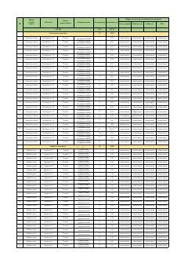

BYHududlardagi bo'sh yer maydonlari va ularning infratuzilma holati haqidagi ma'lumotlar to'plami.
Ushbu hujjat O'zbekiston hududlaridagi bo'sh yer maydonlarining ro'yxatini va ularning infratuzilma bilan ta'minlanganlik darajasini o'z ichiga oladi. Unda tumanlar, yer maydonlari hajmi va elektr, suv hamda yo'l tarmoqlari mavjudligi bo'yicha ma'lumotlar keltirilgan.